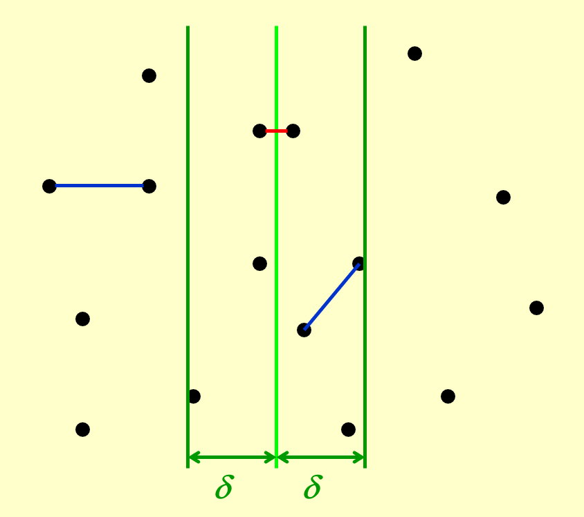
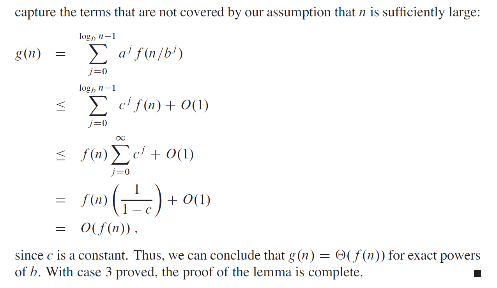
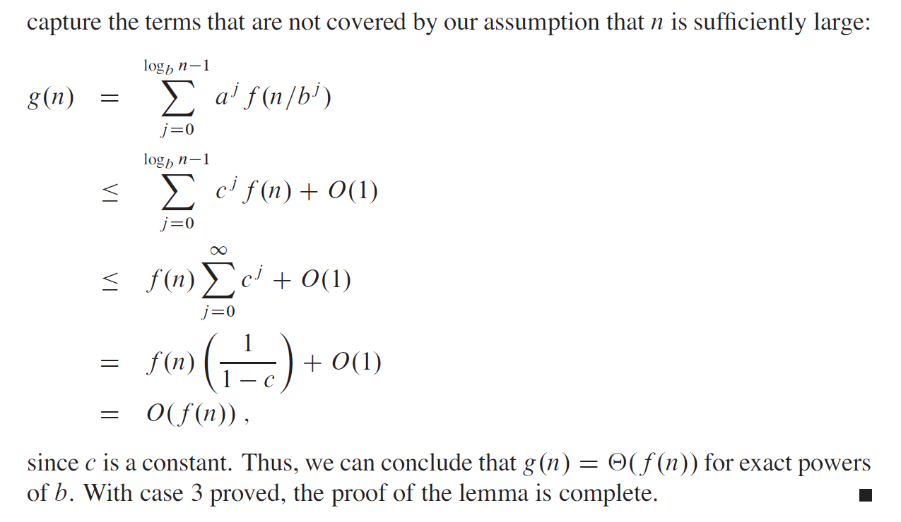

Lec 7: Divide and Conquer⚓︎
约 3731 个字 13 行代码 预计阅读时间 19 分钟
分治 (divide and conquer) 算法已经是我们的老朋友了——在 FDS 的学习中，我们已经在这些问题中用到了分治算法：
再来简单回顾一下分治的大致思想：该算法递归地进行下列操作
- 将问题分成 (divide) 一系列的子问题
- 递归解决 (conquer) 这些子问题
- 将子问题的解合并起来 (combine)，构成原问题的解
时间复杂度的递推公式为：
Examples⚓︎
如果好久没有接触过分治算法，不妨拿下面这道题练练手，温习一下分治算法的做法。
Closest Points Problem⚓︎
问题描述
在平面上给定 \(N\) 个点，请找出距离最近的一对点（如果两个点位于相同的位置，则认为它们之间的距离为 0，但本题保证所有点均分布在不同的位置上
解法
一共有 \(N\) 个点，那么就有 \(\dfrac{N(N - 1)}{2}\) 个距离，逐一遍历和比较这些距离，时间复杂度为 \(T = O(N^2)\)。
回顾一下最大子序列之和的解法：我们先将整个序列拆成两半，然后分别计算左半边子序列，右半边子序列，以及分界线中间区域子序列的最大和，最后取这 3 个结果中的最大者，作为该序列的最大子序列之和。这里我们借鉴这种解法来解决这一问题。

- 首先，我们根据这些点的 x 轴坐标来划分这些点（用绿色竖线隔开
） ，确保两边的点的数目大致相等 - 这里仅画了三根线，分别对应了三种不同的情况：左半边、中间和右半边
- 其中左半边和右半边这两种情况可以递归解决，因此我们最关心的问题是如何处理中间的情况，如何确保它的时间复杂度是线性的（因为只有这样才确保整个算法的时间复杂度为 \(O(N \log N)\)）
解释
在这个问题中，对于时间复杂度的递推公式 \(T(N) = aT(\dfrac{N}{b}) + f(N)\)，\(a = b = 2\)，令 \(f(N) = cN\)，那么：
如果 \(f(N) = cN^2\)，那么：
- 如果考虑分隔线两边所有的点，显而易见的是时间复杂度来到了 \(O(N^2)\) 的水平，这显然不是我们希望的
-
一种可行的改进方法是：仅考虑距分隔线水平距离为 \(\delta\) 内的点，其中 \(\delta\) 是我们提前选定的常数。现在，我们得到了一个位于中间部分，且宽度为 \(2\delta\) 的区域，称为 \(\delta\) 带 (\(\delta\)-strip)。这个区域之外的点显然不会是最近点对的可能点
- 代码实现如下：
代码实现
- 如果能够确保 \(\delta\) 带内的点数为 \(O(\sqrt{N})\)，那么计算中间情况的时间复杂度就是 \(O(N)\) 了
- 然而，如果 \(\delta\) 没有选好，最坏情况下 \(\delta\) 带内包含了所有点，那这个算法又退回到 \(O(N^2)\) 了。因此需要再次改进这个算法，避免这种最坏情况的发生
-
进一步的改进方法是：在确定垂直 \(\delta\) 带区域的基础上，再划分水平 \(\delta\) 带区域。详细步骤为：
- 根据点的 y 坐标，从 y 坐标最大的点开始依次遍历垂直 \(\delta\) 带内的每个点，对于每个点，我们仅计算位于该点下方且距离该点小于等于 \(\delta\) 的点和它之间的距离（划分水平 \(\delta\) 区域）
- 对于 y 坐标相同的点，它们将会被一起处理
-
对于正在被处理的点 \(p\)，它一定位于一个 \(2\delta \times \delta\) 的矩形区域内，如图所示：


- 分隔线正好将矩形划分为 2 个方形 L 和 R
- 可以验证，在最坏情况下，每个点只需要考虑与其他 7 个点的距离即可。此时，这些点分布于方形 L 的四个角以及方形 R 的四个角上（其中 L 的右侧与 R 的左侧重合，因此会有一些点重合
） ，在上图分别为红色的四个点和绿色的四个点。如果在这个区域内，存在点不在这些角上，那么在该区域就会有两个点的距离小于 \(\delta\)，那么这就不是最坏的情况了 - 因此，即使所有的点都在垂直 \(\delta\) 带内，因为每个点的判断是常数次的，因此中间情况的时间复杂度就是 \(O(N)\) 了
代码实现
动画演示
综上，分治算法的时间复杂度为 \(T(N) = 2T(\dfrac{N}{2}) + O(N) = O(N \log N)\)
Analysis⚓︎
对于时间复杂度的递推公式 \(T(N) = aT(\dfrac{N}{b}) + f(N)\)，我们有以下求解方法：
- 代换 (substitution) 法
- 递归树 (recursive-tree) 法
- 主方法 (master method)
在分析的时候，我们会忽略以下细节问题：
- 不关心 \(\dfrac{N}{b}\) 是否是整数
- 对于较小的 \(n\)，始终假定 \(T(n) = \Theta(1)\)
Substitution⚓︎
代换法是三种方法中最简单的一种（用来做判断、选择题较为方便
例子
已知 \(T(N) = 2T(\lfloor \dfrac{N}{2} \rfloor) + N\)，求 \(T(N)\)。
- 先猜测 \(T(N) = O(N \log N)\)
- 再证明：
证明
- 假设对于 \(m < N\)，该结论成立
-
取 \(m = \lfloor \dfrac{N}{2} \rfloor\)，那么存在一个常数 \(c > 0\)，使得 $$ T(\lfloor \dfrac{N}{2} \rfloor) \le c \lfloor \dfrac{N}{2} \rfloor \log \lfloor \dfrac{N}{2} \rfloor $$
-
将这个式子带入递推公式，得：
- 不必特别在意 \(N = 1\) 的情况：前面的假设 2 已经“忽略”这种 trivial case；或者也可以将 \(N = 2\) 或 \(N = 3\) 作为基本情况 (base case)，只要 \(c\) 足够大这个式子一定成立
错误的猜测
如果我们猜测 \(T(N) = O(N)\)，那么会有以下证明：
- 假设对于 \(m < N\)，该结论成立
-
取 \(m = \lfloor \dfrac{N}{2} \rfloor\)，那么存在一个常数 \(c > 0\)，使得 $$ T(\lfloor \dfrac{N}{2} \rfloor) \le c \lfloor \dfrac{N}{2} \rfloor $$
-
将这个式子带入递推公式，得：
这样的证明看起来没什么问题，但错误发生在最后一个不等式上：我们得到了 \(cN + N = (c + 1)N\)，虽然它的时间复杂度确实是 \(O(N)\)，但在形式上它是错误的，因为我们预先假设正确的结论是 \(T(m) \le cm\)，要根据这个条件证明出 \(T(N) \le cN\)，而不是 \((c + 1)N\)。换句话说，我们必须证明出精确的形式(exact form)，连常数也必须保持一致。
通过这个例子的分析，我们发现这个方法最困难的点在于做出一个好的猜测。
小技巧
- 如果时间复杂度的递推关系式中出现类似 \(T(\sqrt{N})\) 等形式，可以考虑换元法：
- 令 \(m = \log n\)，那么 \(T(\sqrt{n}) = T(2^{\frac{m}{2}})\)，\(T(n) = T(2^m)\)
- 再令 \(S(m) = T(2^m)\)，那么 \(S(\dfrac{m}{2}) = T(2^{\frac{m}{2}})\)，这样整个递推关系式就被转化为一般的形式了
- 如果出现形如 \(T(f(N) + c)\) 的形式（\(c\) 为常数
） ，由于 \(N\) 足够大，因此可以忽略常数 \(c\)
Recursive Trees⚓︎
顾名思义，就是根据递推关系递归地来画一棵树。这棵树具有以下特征（假如递推关系形如 \(T(N) = aT(\dfrac{N}{b}) + f(N)\)
- 根节点为 \(f(N)\)
- 一个节点有 \(a\) 个孩子，每个孩子节点为 \(f(\dfrac{N}{b})\)，因此这棵树根据递推公式延伸下去，体现了“递归”的特性
- 叶子节点为 \(T(1)\)
- 树的高度为 \(\log_b N\)
- 时间复杂度 = 所有节点之和 = 内部节点（对应合并操作的时间复杂度）之和 + 叶子节点（对于 base case 的时间复杂度）之和
例子
已知 \(T(N) = 3T(\dfrac{N}{4}) + \Theta(N^2)\)，求 \(T(N)\)。
根据这个递推关系和递归树的特征，我们可以一层层地画出这棵树：
动画演示

先令 \(T(N)\) 作为根节点

展开 \(T(N)\)，令 \(f(N)\)，即 \(cN^2\) 作为根节点，剩下的三个 \(T(\dfrac{N}{4})\) 作为它的孩子节点
分别展开 \(T(\dfrac{N}{4})\)，令 \(f(\dfrac{N}{4})\)，即 \(c(\dfrac{N}{4})^2\) 作为根节点，剩下的三个 \(T(\dfrac{N}{16})\) 作为它的孩子节点

一直展开下去，直到生成孩子节点 \(T(1)\) 为止
对于这棵递归树，我们可以获得的信息有：
- 树的高度为 \(\log_4 N\)
- 第 \(i\) 层一共有 \(3^i\) 个节点，且节点之和为 \((\dfrac{3}{16})^i cN^2\)
- 由以上两条信息，可以推得最后一层的节点（全是 \(T(1)\)）之和为 \(3^{\log_4 N} = N^{\log_4 3} = \Theta(N^{\log_4 3})\)
由以上信息，我们可以计算出 \(T(N)\)：
-
第 2 行到第 3 行的不等式中，用到了一个常用的幂级数展开公式： $$ \dfrac{1}{1 - x} = \sum\limits_{n = 0}^{\infty} x^n, |x| < 1 $$
-
这道题可以用代换法来验证答案的正确性
已知 \(T(N) = T(\dfrac{N}{3}) + T(\dfrac{2N}{3}) + cN\)，求 \(T(N)\)。
- 先按照上个例子的方法画递归树

- 由于这不是一个标准形式下的递推关系，因此画出来的递归树并不是一棵完全树（即不平衡
） ，而且显然最右侧路径是最深的 -
但好消息是我们可以确定以下信息：
- 树的高度为最右侧路径的高度。可以看到第 \(i\) 层中最右侧的节点为 \(c(N \cdot (\dfrac{2}{3})^i) = c(\dfrac{N}{(\frac{3}{2})^i})\)，因此树高为 \(\log_{\frac{3}{2}} N\)
- 每层节点和为 \(cN\)
-
根据这些信息，我们可以做一个稍微有把握的猜测：\(T(N) = O(N \log N)\)——没错，接下来用代换法来证明这个结论的正确性！
证明
摘自 wyy 的 ADS 讲义，个人感觉这个例子有一定的难度：

Master Method⚓︎
主方法，或者主定理(master theorem)（更常用的叫法
Form 1⚓︎
令常数 \(a, b \ge 1\)，\(f(N)\) 为关于 \(N\) 的函数，\(T(N) = aT(\dfrac{N}{b}) + f(N)\)，那么：
- 若对于常数 \(\varepsilon > 0\)，有 \(f(N) = O(N^{\log_b a - \varepsilon})\) 成立，则 \(T(N) = \Theta(N^{\log_b a})\)
- 若 \(f(N) = \Theta(N^{\log_b a})\)，则 \(T(N) = \Theta(N^{\log_b a} \log N)\)
- 若对于常数 \(\varepsilon > 0\)，有 \(f(N) = \Omega(N^{\log_b a + \varepsilon})\)，且对于常数 \(c < 1\) 和充分大的数 \(N\)，有 \(af(\dfrac{N}{b}) < cf(N)\) 成立（正则条件 (regularity condition)
） ，那么 \(T(N) = \Theta(f(N))\)
需要注意的是，主定理并不是万金油，它没有覆盖所有的情况。
例子
对于归并排序，\(a = b = 2\)，且合并操作是线性时间的，那么根据第 2 类情况，我们可以直接得到它的时间复杂度为 \(T = O(N \log N)\)
若 \(a = b = 2, f(N) = N \log N\)，我们无法用这种主定理得到合适的时间复杂度：
- 第 1 类：\(N^{\log_b a - \varepsilon} = N^{1 - \varepsilon} < N \log N\)，所以不符合第 1 类情况
- 第 2 类：\(N^{\log_b a} = N \ne N \log N\)，所以不符合第 2 类情况
- 第 3 类：\(N^{\log_b a + \varepsilon} = N^{1 + \epsilon} > N \log N\)（因为 \(N^{\varepsilon} > \log N(\varepsilon > 0)\)
） ，所以不符合第 3 类情况
可以用递归树来证明主定理的正确性。
证明
先令 \(N = b^k\)，其中 \(k\) 为整数
那么这棵树的节点之和为：\(T(N) = \Theta(N^{log_b a}) + \sum\limits_{j = 0}^{\log_b N - 1}a^j f(\dfrac{N}{b^j})\)
可以看到，最麻烦的部分在于这个求和公式。下面我们根据这三种不同的情况分类讨论（后面两种情况我偷个懒，就直接贴上教材截图了
此时 \(f(N) = O(N^{\log_b a - \varepsilon})\)，那么：
所以 \(T(N) = T(N) = \Theta(N^{log_b a}) + O(N^{log_b a}) = \Theta(N^{log_b a})\)
摘自《算法导论》

摘自《算法导论》
 

Form 2⚓︎
上面介绍的主定理在形式上过于复杂，因此这里给出一个简单形式的主定理（递推关系仍然是 \(T(N) = aT(\dfrac{N}{b}) + f(N)\)）
- 若对于常数 \(\kappa < 1\)，有 \(af(\dfrac{N}{b}) = \kappa f(N)\) 成立，则 \(T(N) = \Theta(f(N))\)
- 若对于常数 \(K > 1\)，有 \(af(\dfrac{N}{b}) = K f(N)\) 成立，则 \(T(N) = \Theta(N^{\log_b a})\)
- 若 \(af(\dfrac{N}{b}) = f(N)\) 成立，则 \(T(N) = \Theta(f(N) \log_b N)\)
这个形式虽然简单，但是能够计算的时间复杂度相当有限，一些能由前一种形式的主定理解决的问题，用这种形式的主定理无法解决；前一种形式的主定理无法解决的问题，这种形式的主定理更无法解决。
例子
已知 \(a = 4, b = 2, f(N) = N\log N\)，能否用第二种形式的主定理算出时间复杂度呢？
- 先计算 \(af(\dfrac{N}{b}) = 4(\dfrac{N}{2}) \log (\dfrac{N}{2}) = 2 N \log N - 2N\)
- 显然找不到任何常数 \(c\) 满足 \(cf(N) = 2 N \log N - 2N\)，因此无法用这种主定理计算
- 然而，用前一种主定理是可以算出来的：发现 \(O(N^{\log_b a - \varepsilon}) = O(N^{2 - \varepsilon}) = f(N)\)，符合第 1 类情况，那么时间复杂度为 \(T = O(N^2)\)
注
想看证明过程的话可以参考修佬的笔记。
Form 3⚓︎
主定理还有一种更强大的形式：当 \(a \ge 1, b > 1, p \ge 0\) 时，方程
的解为
例子
对于归并排序，\(a = b = 2, p = 0, k = 1\)，满足第 2 种情况（\(a = b^1\)
假设某种分治算法中，对于每次递归，\(a = 3, b = 2\)，且合并操作的时间复杂度为 \(O(N)\)，即 \(k = 1, p = 0\)。
不难发现，它符合第 1 种情况，因此 \(T(N) = O(N^{\log_2 3}) = O(N^{1.59})\)。
如果合并时间复杂度为 \(O(N^2)\)，那么 \(T(N) = O(N^2)\)。
再来解决前两种形式都没法计算的问题：\(a = b = 2, f(N) = N \log N\)（即 \(k = p = 1\)
注
个人建议只需要记住更强版本的主定理即可，毕竟适用场合更多一些。
拓展：更更强大的主定理（不作要求）
对于递推关系 \(T(N) = aT(\dfrac{N}{b}) + \Theta(N^k \log^p N)\)，其中 \(a \ge 1, b > 1, k \ge 0\)，\(p\) 为任意实数，那么：
- 若 \(a > b^k\)，则 \(T(N) = \Theta(N^{\log_b a})\)
- 若 \(a = b^k\)，则
- 若 \(p > -1\)，\(T(N) = \Theta(N^k \log^{p+1} N)\)
- 若 \(p = -1\)，\(T(N) = \Theta(N^k \log \log N)\)
- 若 \(p < -1\)，\(T(N) = \Theta(N^k)\)
- 若 \(a < b^k\)，则
- 若 \(p \ge 0\)，\(T(N) = \Theta(N^k \log^p N)\)
- 若 \(p < 0\)，\(T(N) = \Theta(N^k)\)
评论区